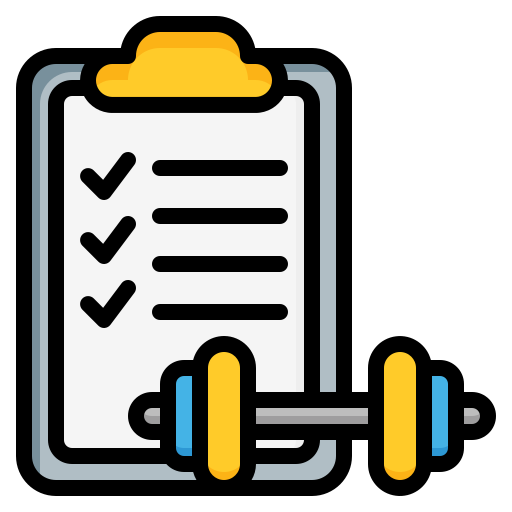

<nz-layout class="layout">

  <nz-sider>
    <div class="logo">
      
      <div class="user-info">
          <strong>Fitness Tracker</strong>
      </div>
  </div>
  

    <ul nz-menu nzTheme="dark" nzMode="inline">
      <li nz-menu-item routerLink="/dashboard">
        
        <span>  DashBoard</span>
      </li>
      <li nz-menu-item routerLink="/workout">
        
        <span> WorkOut</span>
      </li>
      <li nz-menu-item routerLink="/activity">
        
        <span>Activity</span>
      </li>
      <li nz-menu-item routerLink="/goal">
        
        <span>Goal</span>
      </li>
    </ul>

  </nz-sider>

  <nz-layout class="right-layout">
       <nz-content>
        <div class="inner-content">
          <router-outlet></router-outlet>
        </div>
       </nz-content>
  </nz-layout>

</nz-layout>